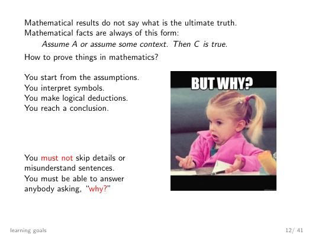

BM20A9200 数学A · 第 04 / 15 讲
第 4 讲 · 一阶逻辑、三类证明与数系进制
First-Order Logic, Three Proof Types and Number Systems
所属章节：第 2 章 证明、函数与基数
资料来源 · 4 项 / 已附 0 项
04-lesson.pdf未附原文件05-exercise.pdf未附原文件Lecture2_Logic, propositions and representation of information.pdf未附原文件Lecture3_Proving mathematical theorems.pdf未附原文件
未附文件仅列原始名称；版本与核对日期由维护者登记。
本节定位
第 3 讲解决了“真值怎么算”，第 4 讲解决“证明怎么写”。它把第 3 讲的真值表升级为一阶逻辑的记号（∃、∀），并给出三类标准证明结构：直接证明、逆否证明、反证法。后半段转入数系与二进制、十六进制转换——这是软件工程方向唯一直接对应硬件的数学内容。
本讲对应第 4 周学习目标 5.1–5.2（读懂并判断证明是否正确、运用三类证明）与 4.1–4.2（举出数系例子、手动做二进制与十进制转换）。考试中“证明”题的比重最大，通常 6–8 分；“进制转换”几乎必出一道小题。
学完本节你应当能够：
- 用谓词、量词与集合记号把数学命题写成紧凑的一阶逻辑式
- 正确否定含 ∃ 与 ∀ 的命题，并区分“所有都不”与“并非所有”
- 按“Proof → 假设 → 推导 → 结论 → □”的框架写出直接证明
- 识别何时该用逆否证明，并写出 ¬C ⇒ ¬A 的推导
- 用反证法证明“不存在整数解”“√2 无理”这类命题
- 手动完成二进制与十进制、十六进制与十进制的互相转换
- 用 0/1 向量表示集合，并用 ∧、∨、¬ 实现集合运算
4.1 复习：真值表的两种排版
上一讲的真值表可以用两种排版。Type 1 为每个中间子公式单独开一列；Type 2 把运算符写在原子命题之间，按优先级从内到外计算并编号。例如 S 为 (A ⇒ B) ⇒ (A ⇒ (C ∧ B)) 时，Type 2 会在 A、B、C 之后依次填 A⇒B、C∧B、A⇒(C∧B)，最后填中间的 ⇒。两种排版结论相同，答题时任选一种，但要写全中间列。
课堂练习：(P ∧ ¬Q) ∨ (¬P ∧ Q) 在哪些真值组合下为真？四行算下来只有 P=0,Q=1 与 P=1,Q=0 为真——它正是 xor 的展开式。这条练习说明“同一个逻辑运算可以有多种写法”，后面化简逻辑式时会反复用到。
4.2 一阶逻辑的记号
为了更紧凑地写数学命题，需要一套“语言”。数学表达式分两类：封闭的（closed），如 2 + 2 = 4、0 > 10、π ∈ R，它们有确定真值；开放的（open），如 x ∈ R、x + 2 = 4、x² + x − 5 > 10，真值取决于 x。
谓词（predicate）P(x)、Q(x, y) 表示“关于 x 的命题”“关于 x, y 的命题”，把具体对象代入后才有真值。例：若 P(x) 表示“x ∈ R”，则 P(1) = T、P(π) = T、P(i) = F、P({1, 2, 4}) = F（集合不是实数）；若 Q(x, y) 表示“x < y”，则 Q(1, 2) = T、Q(5, 5) = F；若 R 表示“2 + 2 = 5”，则 R = F。
存在量词（existential quantifier）∃ 读作“存在”“至少有一个”“对某个”；∃x P(x) 表示“存在 x 使 P(x) 为真”。全称量词（universal quantifier）∀ 读作“对所有”“任给”；∀x P(x) 表示“P(x) 对所有 x 为真”。限定取值集合时写 (∃x ∈ A)P(x) 或 (∀x ∈ A)P(x)。
用它们可以把子集定义写成一串等价式：A ⊆ B ⇔ ∀x (x ∈ A ⇒ x ∈ B) ⇔ (∀x ∈ A)(x ∈ B)。这三步是同一个意思的三种写法，第 8 讲的“堆叠蕴含”与第 9 讲的整除证明都会用到这种翻译。
4.3 量词的否定
设 Rock 为全体岩石，G(x) 表示“x 是绿色的”。四句话：(∃x ∈ Rock)G(x)（有些岩石是绿的）、(∀x ∈ Rock)G(x)（所有岩石都是绿的）、(∃x ∈ Rock)(¬G(x))（有些岩石不是绿的）、(∀x ∈ Rock)(¬G(x))（所有岩石都不是绿的，即“没有岩石是绿的”）。
两条等值式必须背下来：¬(∃x)G(x) ⇔ (∀x)(¬G(x))；¬(∀x)G(x) ⇔ (∃x)(¬G(x))。也就是说，否定时量词翻转、谓词取反。
4.4 为什么需要证明
背景知识：自然数 p 是素数（prime），如果 p 只能被 p 与 1 整除。7 是素数，6 = 2·3 不是；素数序列 2, 3, 5, 7, 11, 13, 17, …。
数学结论并不宣称“终极真理”，它总是这种形式：假设 A（或某个语境），则 C 为真。证明的流程是：从假设出发，解释符号，做逻辑推导，抵达结论。不能跳细节，也不能误解句子；必须能回答任何人追问的“为什么”。
好证明的三条标准：使用公认的数学约定；逻辑有效（logically valid）；可读（引导读者、没有明显跳跃）；并且尽可能简洁（不重复、不写废话）。读证明的收益是：理解命题为何为真、看清因果、学会证明技巧、发现新的解题方法、以及评估结论的可信度（同行评议）。
4.5 三类证明与两个模型问题
模型问题 1（Goldbach 猜想）：若自然数 n > 2 是偶数，则它是两个素数之和。它有“假设—结论”的形式 A ⇒ C，其中 A 是“n > 2 且为偶数”，C 是“n 是两个素数之和”。
模型问题 2（Euclid 定理）：存在无穷多个素数。它只有结论 C，很难写成 A ⇒ C 的形式。这两类问题的区别决定了能用哪些证明方法——这一点在第 4.7 节会立刻用到。
4.6 直接证明
直接证明（direct proof）直接推出结论 C；若有假设（形如 A ⇒ C），就用上假设。结构是：假设 A → 逻辑推导 → 得到 C。开头写 Proof，结尾写 □、■ 或 Q.E.D.。
范例（源文件 p24）：设 A、B 是集合，证明 A ∩ B ⊆ B。先翻译：A ∩ B ⊆ B 意为“对任意 x，若 x ∈ A ∩ B 则 x ∈ B”。证明：设 x ∈ A ∩ B，由交集定义得 x ∈ A 且 x ∈ B，于是 x ∈ B。因 x 任意，故 A ∩ B ⊆ B。□
直接证明在中学最常见；成年之后要根据问题选择最合适的类型。判断标准在第 5 讲给出（假设简单就用直接证明）。
4.7 逆否证明
逆否证明（proof by contrapositive）证明 ¬C ⇒ ¬A，它与 A ⇒ C 等值。它只适用于 A ⇒ C 形式的命题。结构：从结论的否定 ¬C 出发 → 推导 → 得到假设的否定 ¬A。
| A | C | A ⇒ C | ¬C ⇒ ¬A |
|---|---|---|---|
| 0 | 0 | 1 | 1 |
| 0 | 1 | 1 | 1 |
| 1 | 0 | 0 | 0 |
| 1 | 1 | 1 | 1 |
范例（源文件 p29）：设 n ∈ Z，证明“若 n⁹ 是奇数，则 n 是奇数”。假设 n 不是奇数，则 n 是偶数，n = 2k（k ∈ Z）；于是 n⁹ = (2k)⁹ = 2⁹k⁹ = 2·(2⁸k⁹)，而 2⁸k⁹ 是整数，故 n⁹ 是偶数，即 n⁹ 不是奇数。这正好是 ¬C ⇒ ¬A。□
注意：Euclid 定理（“存在无穷多素数”）不能逆否证明，因为它不是 A ⇒ C 形式。判断“能否用逆否”的第一步永远是“命题有没有假设”。
为什么逆否与原命题等值？可以用一个生活例子检验：原句“如果下雨，我就待在室内”与逆否“如果我出门了，就没有下雨”同真同假；而逆命题“如果我待在室内，就下雨了”显然不等值。
4.8 反证法
反证法（proof by contradiction，reductio ad absurdum）证明“结论的否定会导致矛盾”。两种形式：结论型 C 证明 ¬C ⇒ F；蕴含型 A ⇒ C 证明 (A ∧ ¬C) ⇒ F。结构：假设 ¬C（若有假设 A 也一并假设）→ 逻辑推导 → 得到矛盾 F（如 0 = 1）→ 结论成立。
范例（源文件 p34）：证明方程 2x + 6y = 1 没有整数解。假设存在 x, y ∈ Z 使 2x + 6y = 1，则 1 = 2(x + 3y)；因 x + 3y ∈ Z，故 1 是偶数。但 1 是奇数，矛盾。所以无整数解。□
范例（源文件 Ex4）：证明 √2 是无理数。假设 √2 是有理数，则可写成最简分数 √2 = a/b（a, b ∈ Z⁺，且 a、b 无公因数）。两边平方：2b² = a²，故 a² 是偶数，由“a² 偶 ⇒ a 偶”得 a = 2k。代回：2b² = 4k²，即 b² = 2k²，故 b 也是偶数。于是 a、b 都是偶数，与“最简分数”矛盾。因此 √2 不是有理数。□
范例（源文件 Ex5）：一个挖去两个对角格的棋盘无法用 2×1 或 1×2 骨牌无重叠铺满。把棋盘染色成黑白相间，每块骨牌恰好覆盖一黑一白；挖去的两个对角格同色，故剩下的黑白格数相差 2，不可能配对。这是“不变量”式的反证。
4.9 数系的历史
课件按历史顺序展示数系：简单计数（tally counting，一根竖线表示 1）；象形文字与罗马数字；现代十进制；二进制；十六进制。
简单计数：one |、two ||、three |||、four ||||、five |||||、six ||||||……（Lebombo bone，Eswatini，约公元前 35000 年）。更高级的写法是分组：埃及象形文字里 ten 记作 2 形符号、twenty 记作 22，而 4622 写作 4444 3333 3322 ||（四个“千”、三个“百”、两个“十”、两根竖线）。
十进制：zero 0、one 1、…、four thousand six hundred twenty two 4622，即 4×1000 + 6×100 + 2×10 + 2×1。古埃及也用“大单位在前”的思想，但他们写四千用四个“千”符号，而不是把 4 这一个符号放到千位；现代位值制（positional notation）的关键是同一个符号 1 在不同位置表示不同值：最右位是 1，右数第二位是 10，第三位是 100，第七位是 10⁶。
二进制：zero 0、one 1、two 10、three 11、four 100、forty nine 110001。十六进制：0–9 之后用 A = 10、B = 11、…、F = 15。计算机用二进制是因为两种状态（通/断）最容易实现；十六进制是二进制的“缩写”，因为 16 = 2⁴，一位十六进制恰好对应四位二进制。
4.10 二进制与十六进制转十进制
二进制数的每位按 2 的幂加权：110001 = 1×2⁵ + 1×2⁴ + 0×2³ + 0×2² + 0×2¹ + 1×2⁰ = 32 + 16 + 1 = 49。课件给出 2¹⁰ 到 2⁰ 的值表：1024、512、256、128、64、32、16、8、4、2、1；另一例 1001 1110 = 128 + 16 + 8 + 4 + 2 = 158。
十六进制按 16 的幂加权：4E5A = 4×16³ + 14×16² + 5×16¹ + 10×16⁰ = 4×4096 + 14×256 + 5×16 + 10 = 16384 + 3584 + 80 + 10 = 20058。
术语来源：decimal ← 拉丁 decimus（第十）← decem（十）；binary ← binarius（由两个组成）← bini（成对）；hexadecimal ← hexa（六）+ deca（十），即十六进制。
记号歧义：1001 到底是“一千零一”还是二进制的 9？有歧义时写底数：1001₂ 表示二进制 1001，值等于 2³ + 2⁰ = 9；1001₁₀ 表示十进制一千零一。答卷里凡非十进制数，务必标底数。
4.11 十进制转二进制：除二取余
算法：不断除以 2，记录商与余数，直到商为 0；把余数从下往上读，就是二进制表示。以 152 为例：152/2 = 76 余 0；76/2 = 38 余 0；38/2 = 19 余 0；19/2 = 9 余 1；9/2 = 4 余 1；4/2 = 2 余 0；2/2 = 1 余 0；1/2 = 0 余 1。自下而上读余数：1001 1000，即 152₁₀ = 10011000₂。
检验方法：把结果按权展开加回去，128 + 16 + 8 = 152。这个“回代检验”只需几秒钟，却能挡住绝大多数抄写错误。
4.12 拓展：用 0/1 向量表示集合
设 U = {a, 2, 0, d, 5, hello}，取一个向量表示（vector representation）V = (0, 2, 5, a, d, hello)，即把 U 的元素各列一次。对子集 A = {hello, 2, d}，它的二进制向量是 V_A = (0, 1, 0, 0, 1, 1)：第 k 位为 1 当且仅当 V 的第 k 个元素属于 A。
形式化：若 V = (a₁, …, aₙ)，且 (b₁, …, bₙ) 是 0/1 向量，则它对应子集 A = { aⱼ ∈ U : bⱼ = 1 }；反之 bⱼ = 1 当 aⱼ ∈ A，否则为 0。
用途：集合运算变成逐位逻辑运算。VA∪B = V_A ∨ V_B、VA∩B = V_A ∧ V_B、VA∁ = ¬V_A（逐位进行）。例：V = (0,1,2,3,4,5)、A = {0,2,4}、B = {3,4,5}，则 V_A = (1,0,1,0,1,0)、V_B = (0,0,0,1,1,1)；逐位 ∧ 得 (0,0,0,0,1,0) 即 A ∩ B = {4}，逐位 ∨ 得 (1,0,1,1,1,1) 即 A ∪ B，逐位 ¬ 得 (0,1,0,1,0,1) 即 A∁。这就是计算机里“用位图做集合运算”的原理。
量词否定的规则是量词翻转、谓词取反，即存在命题的否定变成全称的否定。英文表述有个陷阱：所有岩石都不是绿的，意思是每一块都不绿；并非所有岩石都是绿的，意思只是有些不绿，两句完全不同。子集定义可写成三种等价形式，核心是对任意元素，若属于甲则也属于乙。这三种写法表达同一件事，后面的堆叠蕴含与整除证明都靠这种翻译。
原版图页（源 PDF 插图页）




| English | 中文 | 说明 / 例句 |
|---|---|---|
| predicate | 谓词 | P(x) becomes true or false once x is given. |
| existential quantifier | 存在量词 | ∃x P(x): there is at least one x with P(x). |
| universal quantifier | 全称量词 | ∀x P(x): P(x) holds for every x. |
| negation of quantifiers | 量词否定 | ¬∃x P(x) ⇔ ∀x ¬P(x); ¬∀x P(x) ⇔ ∃x ¬P(x). |
| direct proof | 直接证明 | Assume A, deduce, conclude C. |
| proof by contrapositive | 逆否证明 | Prove ¬C ⇒ ¬A instead of A ⇒ C. |
| proof by contradiction | 反证法 | Assume ¬C (and A) and derive a contradiction F. |
| reductio ad absurdum | 归谬法 | Latin name for proof by contradiction. |
| logically valid | 逻辑有效 | Every step follows from definitions or earlier results. |
| Q.E.D. | 证毕 | Marker at the end of a proof; also written □. |
| positional notation | 位值制 | The same digit means different values in different positions. |
| binary | 二进制 | Base 2; digits 0 and 1; weights 2k. |
| hexadecimal | 十六进制 | Base 16; digits 0–9 and A–F. |
| least significant digit | 最低位 | The rightmost digit, weight 2⁰ or 16⁰. |
| binary vector | 二进制向量 | A 0/1 vector describing which elements belong to a subset. |
先把 ⊆ 翻译成元素语言：对任意 x，若 x ∈ A ∩ B 则 x ∈ B。
Proof. 设 x ∈ A ∩ B 为任意元素。由交集定义，x ∈ A 且 x ∈ B。于是 x ∈ B。由于 x 任意，故 A ∩ B ⊆ B。□
要点：整个证明只用了一次定义；不要写“显然”，因为“显然”掩盖了正是要考的那一步。
这是 A ⇒ C 形式（A：n⁹ 奇；C：n 奇）。结论的否定“n 不是奇数”比假设更容易展开，故选逆否证明。
Proof. 假设 n 不是奇数，则 n 是偶数，故存在 k ∈ Z 使 n = 2k。于是 n⁹ = (2k)⁹ = 2⁹k⁹ = 2·(2⁸k⁹)。因为 2⁸k⁹ ∈ Z，所以 n⁹ 是偶数，即 n⁹ 不是奇数。
我们证明了 ¬C ⇒ ¬A，它与 A ⇒ C 等值，故原命题成立。□
结论是“不存在”，适合反证法。
Proof. 假设存在 x, y ∈ Z 使 2x + 6y = 1。则 1 = 2(x + 3y)。因 x + 3y ∈ Z，这说明 1 是偶数。但 1 是奇数，矛盾（1 既偶又奇）。因此不存在整数解。□
推广：ax + by = c 有整数解的必要条件是 gcd(a, b) | c。本例 gcd(2, 6) = 2 不整除 1，故无解。第 9 讲会把这条充分必要条件完整证明。
Proof. 假设 √2 是有理数，则可写成最简分数 √2 = a/b，其中 a, b ∈ Z⁺ 且 a、b 没有公因数。
两边平方：2b² = a²。故 a² 是偶数；由“平方为偶数则本身为偶数”，a 是偶数，设 a = 2k。
代回：2b² = (2k)² = 4k²，两边除以 2 得 b² = 2k²，故 b² 是偶数，b 也是偶数。
于是 a 与 b 都是偶数，至少有公因数 2，与“最简分数”矛盾。因此 √2 不是有理数，即无理数。□
关键引理“n² 偶 ⇒ n 偶”本身可用逆否证明：若 n 奇则 n = 2k+1，n² = 4k²+4k+1 为奇。
152 除二取余：152→76 余 0；76→38 余 0；38→19 余 0；19→9 余 1；9→4 余 1；4→2 余 0；2→1 余 0；1→0 余 1。自下而上读：10011000。
回代检验：128 + 16 + 8 = 152，正确。
4E5A：4×4096 + 14×256 + 5×16 + 10 = 16384 + 3584 + 80 + 10 = 20058。
110001：32 + 16 + 1 = 49。三个结果与源文件数值一致，可作为核对。
- 用直接证明证明：若 A ⊆ B 且 B ⊆ C，则 A ⊆ C。
- 用逆否证明证明：若 x² 是偶数（x ∈ Z），则 x 是偶数。
- 用反证法证明：不存在整数 x, y 使 x² − 9y = 3。
- 把 238510 写成二进制，把 1011 1110₂ 写成十进制与十六进制。
- 设 U = {p, q, r, s}，V = (p, q, r, s)，A = {p, r}。写出 V_A，并用逐位运算求 A∁ 的向量。
参考答案与思路
1. 设 x ∈ A 任意。由 A ⊆ B 得 x ∈ B；由 B ⊆ C 得 x ∈ C。故 x ∈ C，因 x 任意得 A ⊆ C。□（这是传递性，三步只用两次定义。）
2. 逆否：假设 x 不是偶数，则 x 是奇数，x = 2k + 1，于是 x² = 4k² + 4k + 1 = 2(2k² + 2k) + 1 为奇数，即 x² 不是偶数。故 ¬C ⇒ ¬A 成立，原命题成立。□
3. 假设有整数解。则 x² = 9y + 3 = 3(3y + 1)，故 3 | x²。讨论 x 除以 3 的余数：x = 3k 时 x² = 9k² 被 9 整除；x = 3k ± 1 时 x² = 9k² ± 6k + 1 ≡ 1 (mod 3)，均不可能使 x² ≡ 0 (mod 3)。更简单的做法：x² ≡ 0, 1 (mod 3)，而 9y + 3 ≡ 0 (mod 3)，需 x² ≡ 0 (mod 3)，则 x = 3k，x² = 9k²，于是 9k² = 9y + 3，左边被 9 整除、右边不被 9 整除，矛盾。
4. 238510 连续除 2 取余，得 111010001111011110₂（可用 2 的幂回代核对）。1011 1110₂ = 128 + 32 + 16 + 8 + 4 + 2 = 190；十六进制按四位一组：1011 = B、1110 = E，故为 BE₁₆。
5. V_A = (1, 0, 1, 0)；A∁ 的向量 = ¬V_A = (0, 1, 0, 1)，对应 {q, s}。
考点分层
方法清单
选证明类型
- 先把命题写成 A ⇒ C 或纯 C 的形式
- 若是 A ⇒ C 且 A 简单，选直接证明
- 若是 A ⇒ C 但 ¬C 更好展开，选逆否证明
- 若结论是“不存在/不是/无穷”，选反证法
- 若都不顺，先用小例子与反例试探命题是否为真
写证明的骨架
- 第一行写 Proof，并声明“设 … 为任意元素”或“假设 …”
- 每个推导都注明依据（定义、已证结论、代数运算）
- 不跳步：把“由定义得”写出来，而不是写“显然”
- 结尾明确写出目标结论，并以 □ 收尾
- 检查是否用到了全部假设（未用的假设通常意味着证明有漏洞）
进制转换
- 十进制转二进制：反复除以 2，记下余数
- 从最后一个余数往上读，得到二进制串
- 二进制转十进制：按 2 的幂展开相加
- 二进制转十六进制：从右往左每四位一组，查表 1011=B、1110=E
- 最后用另一种方法回代检验
| 源文件 | 页码 | 覆盖的知识点 |
|---|---|---|
| 04-lesson.pdf | p2–p6 | 真值表复习（五种运算符）、S 的两种排版、课堂练习 xor 展开 |
| 04-lesson.pdf | p7–p12 | 第 4 周学习目标、一阶逻辑记号（谓词、∃、∀）、A ⊆ B 的逻辑写法、量词否定 |
| 04-lesson.pdf | p14–p17 | 为什么需要证明、数学事实的形式、好证明的三条标准、读证明的收益 |
| 04-lesson.pdf | p19–p24 | 两个模型问题（Goldbach、Euclid）、直接证明的结构与集合范例 |
| 04-lesson.pdf | p26–p30 | 逆否证明的结构与真值表、n⁹ 为奇的范例、Ex1–Ex3 |
| 04-lesson.pdf | p32–p35 | 反证法的两种形式、2x+6y=1、√2 无理、棋盘染色 |
| 04-lesson.pdf | p39–p43 | 计数、象形、罗马、十进制、位值制、二进制与十六进制示例 |
| 04-lesson.pdf | p45–p46 | 二进制按权展开、1001 1110 = 158、术语来源与底数记号 |
| 04-lesson.pdf | p47–p49 | 0/1 向量表示子集、逐位 ∧ ∨ ¬ 实现集合运算 |
| 04-lesson.pdf | p51–p52 | 除二取余算法（152 例）、Ex6–Ex8 进制计算 |
| 05-exercise.pdf | Ex3、Ex4 | 判断证明是否 sound、整除的传递性直接证明 |
| （跳过） | p8–p9、p13、p16、p21、p25、p31、p37–p38 | 目录页与课堂讨论页，内容已并入正文 |
| （补充拓展） | — | √2 无理性的完整证明、量词否定的英文陷阱、位图集合运算 |